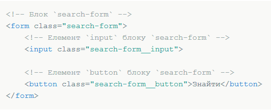
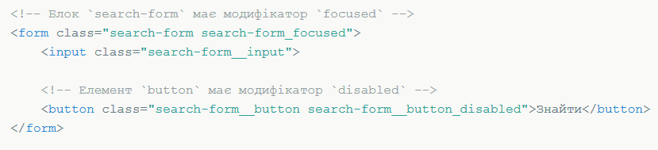

Мета даної методології - розробка сайтів, які необхідно швидко запускати і довго підтримувати. Методологія
допомагає створювати розширювані та повторно використовувані компоненти інтерфейсу.
Основна концепція - легка підтримка проектів з часом і повторне використання компонентів.
Головна стратегія БЕМ полягає в організації CSS-коду в повторно використовувані модулі за допомогою розумної
системи іменування.
Методологія БЕМ
БЕМ (Блок, Елемент, Модифікатор) - компонентний підхід до веб-розробці. В його основі лежить принцип поділу інтерфейсу на незалежні блоки. Він дозволяє легко і швидко розробляти інтерфейси будь-якої складності і повторно використовувати існуючий код, уникаючи «Copy-Paste».
Мета методології БЕМ
Блок
Блок - це Функціонально незалежний компонент сторінки, який може бути повторно використаний. В HTML блоки представлені атрибутом class. Назва блоку характеризує значення блоку( «що це?» - «меню»: menu, «кнопка»: button), а не стан ( «який, як виглядає?» - «червоний»: red, «великий»: big).
- Блок не повинен впливати на своє оточення, т. Е. Блоку не слід задавати зовнішню геометрію (у вигляді відступів, кордонів, що впливають на розміри) і позиціонування.
- В CSS по БЕМ також не рекомендується використовувати селектори за тегами або id.
Таким чином забезпечується незалежність, при якій можливе повторне використання або перенесення блоків з місця на місце. При знаходженні блоку запитайте себе, чи можете ви легко видалити цей шматок коду і використовувати його десь ще. Наприклад, блоком будуть хедер і футер сайту.
Особливості
- Вкладеність
- Блоки можна вкладати один в одного.
- Допустима будь-яка вкладеність блоків.
Елемент
Елемент - складова частина блоку, яка не може використовуватися у відриві від нього.
- Назва елемента характеризує сенс ( «що це?» - «пункт»: item, «текст»: text), а не стан ( «який, як виглядає?» - «червоний»: red, «великий»: big).
- Структура повного імені елемента відповідає схемі: ім'я-блока__імя-елемента. Ім'я елемента відокремлюється від імені блоку двома підкресленнями (__).
Особливості
- Вкладеність
- Елементи можна вкладати один в одного.
- Допустима будь-яка вкладеність елементів.
- Елемент - завжди частина блоку, а не іншого елемента. Це означає, що в назві елементів не можна прописувати ієрархію виду block__elem1__elem2.
- Належність
Елемент - завжди частина блоку і не повинен використовуватися окремо від нього.
- Необов'язковість
Елемент - необов'язковий компонент блоку. Не у всіх блоків повинні бути елементи.
Модифікатор
Модифікатор визначає зовнішній вигляд, стан або поведінку блоку або елементу.
- Назва модіфікатора характерізує Зовнішній вигляд ( «Який розмір?», «Яка тема?» І т. П - «розмір»: size_s, «тема»: theme_islands), стан ( «чим відрізняється від інших?» - «відключений»: disabled, «сфокусований»: focused) і поведінку( «як поводиться?», «як взаємодіє з користувачем?» - «направлення»: directions_left-top).
- Ім'я модіфікатора відділяється від імені блоку або елементів одним підкресленням (_).
Особливості
- Модифікатор не можна використовувати самостійно
З точки зору БЕМ-методології модифікатор не може використовуватися у відриві від модифікується блоку або елементу. Модифікатор повинен змінювати вид, поведінку або стан суті, а не заміняти її.
- Мікс
Мікси дозволяють поєднувати поведінку і стилі декількох сутностей без дублювання коду та створювати семантично нові компоненти інтерфейсу на основі наявних.